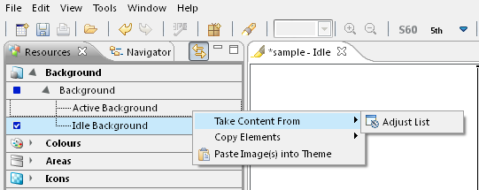

Taking contents from existing themes
As an alternative to copying and pasting, you can take components from
another theme and add them to your current theme. This mechanism works
in a similar way as copying components in a hierarchy. Having selected
the category or sub-category that needs to be copied over from another theme,
open the context menu and select the
Take Content From option. This opens a sub-menu which gives a
list of themes from which components can be
taken. The list of themes can be configured to include themes from the workspace,
example themes or a custom list of themes.

Figure: Taking content
from existing themes
The list of available themes from which components can be taken is
configured with the Adjust List…
option, which opens the Component
Store preferences.